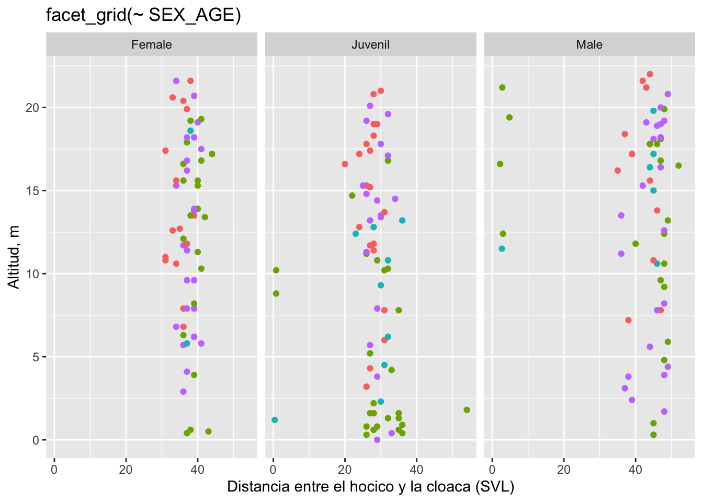
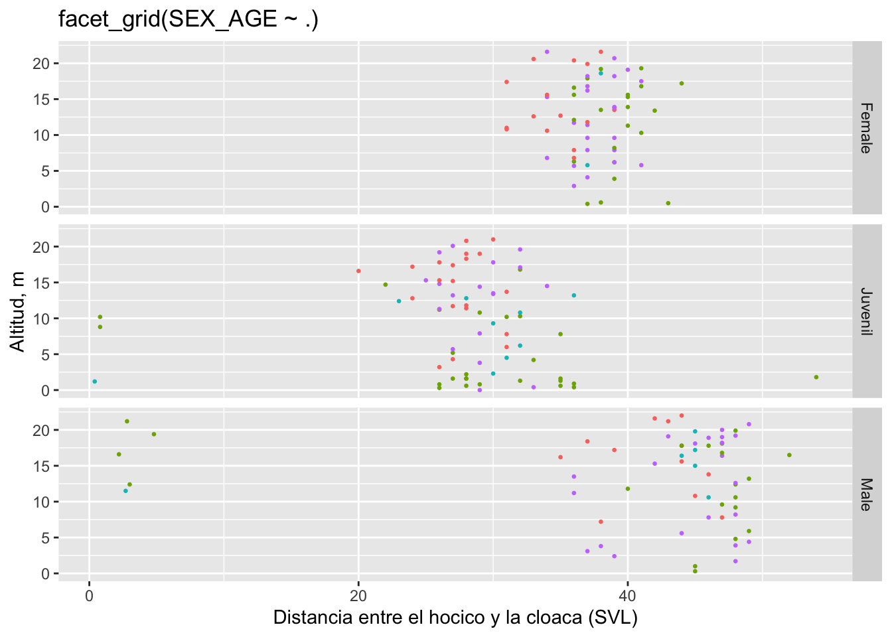
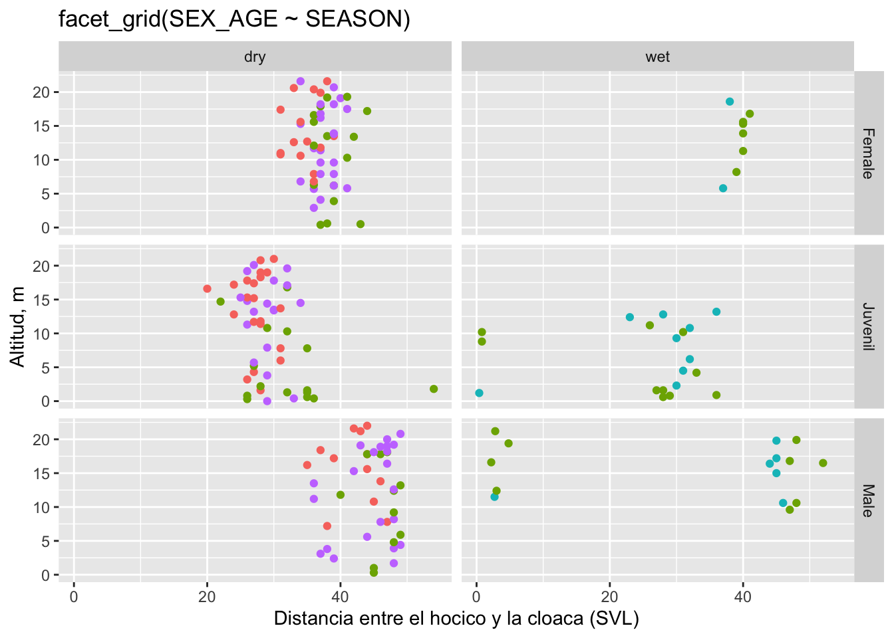

# Paquetes necesarios
pkg_needed <- c("ggplot2", "ggversa")
to_install <- pkg_needed[!pkg_needed %in% installed.packages()[, "Package"]]
if (length(to_install) > 0) {
install.packages(to_install, dependencies = TRUE)
}
library(ggplot2)
library(ggversa)Gráficos en cuadrícula con facet_grid
Fuente y adaptación: “Facet_Grid – Gráficos en cuadrícula con facet_grid” Raymond L. Tremblay (Visualización de Datos)
1 facet_grid()
Esta opción forma una matriz de gráficos por fila y columna por una variable seleccionada. Es una opción que facilita ver los patrones cuando hay dos variables discretas.
Facet grid es un opción de gran ventaja de usar ggplot2: Organizando los gráficos en una cuadrícula. Eso resulta ser muy útil para la producción de un gráfico por cada par de variable discreta; o sea, cada grupo producirá un gráfico de acuerdo a su categoría. Los próximos ejemplos se basan en la base de datos del lagartijo Anolis.
1.1 Librerías
2 Exploración de base de datos
data("Anolis", package = "ggversa")
dim(Anolis)[1] 503 15summary(Anolis) STUDY Survey_Site LOCATION TIME
Length:503 Length:503 Length:503 Length:503
Class :character Class :character Class :character Class1:hms
Mode :character Mode :character Mode :character Class2:difftime
Mode :numeric
DATE SEASON SPECIES SEX_AGE
Length:503 Length:503 Length:503 Length:503
Class :character Class :character Class :character Class :character
Mode :character Mode :character Mode :character Mode :character
HEIGHT DISTANCE_FROM_CENTERLINE PERCH_SUBSTRATE PERCH_DIAMETER
Min. : 0.00 Min. :0.2000 Length:503 Min. : 0.000
1st Qu.: 7.80 1st Qu.:0.8000 Class :character 1st Qu.: 5.000
Median :13.40 Median :0.8000 Mode :character Median : 5.000
Mean :12.33 Mean :0.8816 Mean : 5.042
3rd Qu.:17.50 3rd Qu.:0.8000 3rd Qu.: 5.000
Max. :22.00 Max. :3.6000 Max. :30.000
NA's :2 NA's :3 NA's :29
WEIGHT SVL TAIL
Min. : 0.300 Min. : 0.40 Min. : 2.90
1st Qu.: 0.900 1st Qu.:29.75 1st Qu.:43.00
Median : 1.500 Median :36.00 Median :49.00
Mean : 2.227 Mean :35.16 Mean :49.82
3rd Qu.: 2.400 3rd Qu.:41.25 3rd Qu.:59.50
Max. :31.000 Max. :54.00 Max. :78.00
NA's :426 NA's :307 NA's :412 

3 Diccionario de variables del conjunto de datos Anolis
Loading required package: knitr| Variable | Significado |
|---|---|
| STUDY | Código o nombre del estudio en el que se recolectaron los datos. |
| Survey_Site | Sitio de muestreo (nombre o código del sitio donde se hicieron las observaciones). |
| LOCATION | Localidad geográfica más específica (poblado, coordenadas o región). |
| TIME | Hora del día en que se hizo la observación o captura. |
| DATE | Fecha del muestreo (día/mes/año). |
| SEASON | Temporada del año (por ejemplo seca, lluviosa, verano, invierno). |
| SPECIES | Especie del individuo observado/capturado (en este caso lagartija Anolis spp.). |
| SEX_AGE | Sexo y categoría de edad del individuo (por ejemplo M-adulto, F-juvenil). |
| HEIGHT | Altura a la que se encontró/perchó el animal (m o cm sobre el suelo). |
| DISTANCE_FROM_CENTERLINE | Distancia desde la línea central del transecto o sendero (m o cm). |
| PERCH_SUBSTRATE | Tipo de sustrato donde estaba el animal (rama, tronco, hoja, suelo, etc.). |
| PERCH_DIAMETER | Diámetro del sustrato donde se posaba (en cm). |
| WEIGHT | Peso corporal del individuo (en g). |
| SVL | Snout–Vent Length: longitud desde el hocico hasta la cloaca (en mm o cm). |
| TAIL | Longitud de la cola del individuo (en mm o cm). |
4 FACETAS
4.1 Facet_grid con cuadrículas verticales
En la Figura hacemos una demostración utilizando la altura del sitio de muestreo, pero con las categorías se generó una al lado de las otras en una serie. Note la tilde, ~, antes del nombre de la variable SEX_AGE. Si usamos solamente una variable (como en este caso), la presentación de los gráficos cambiará dependiendo si la tilde está antes o después de la variable, tal demostrado a más adelante.
# Objeto base
rr <- ggplot(Anolis, aes(x = SVL, y = HEIGHT))
# Ejemplo 1: facet_grid(~ SEX_AGE)
p1 <- rr +
geom_point(aes(color = Survey_Site)) +
facet_grid(~ SEX_AGE) +
labs(
x = "Distancia entre el hocico y la cloaca (SVL)",
y = "Altitud, m",
title = "facet_grid(~ SEX_AGE)"
) +
theme(legend.position = "none")
p1Warning: Removed 308 rows containing missing values or values outside the scale range
(`geom_point()`).
4.2 Facet_grid con cuadrículas orizontales
Ahora ponemos la variable antes de la , pero note que después de la hay un punto .. Notemos el efecto en la Figura a continuación.
# Ejemplo 2: facet_grid(SEX_AGE ~ .)
p2 <- rr +
geom_point(aes(color = Survey_Site), size = 0.5) +
facet_grid(SEX_AGE ~ .) +
labs(
x = "Distancia entre el hocico y la cloaca (SVL)",
y = "Altitud, m",
title = "facet_grid(SEX_AGE ~ .)"
) +
theme(legend.position = "none")
p2
4.3 Facet_grid con cuadrículas representando dos variables
Ahora veremos en la enorme ventaja de facet_grid al representar dos variables discretas simultáneamente, la edad_sexo de los Anolis y el periodo del año (seco o lluviosos) del muestreo. Note que el parámetro ahora es SEX_AGE∼ SEASON.
# Ejemplo 3: facet_grid(SEX_AGE ~ SEASON)
p3 <- rr +
geom_point(aes(color = Survey_Site)) +
facet_grid(SEX_AGE ~ SEASON) +
labs(
x = "Distancia entre el hocico y la cloaca (SVL)",
y = "Altitud, m",
title = "facet_grid(SEX_AGE ~ SEASON)"
) +
theme(legend.position = "none")
p3